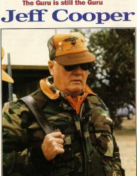

Jeff Cooper's CommentariesAbout Jeff CooperBorn Monday 10 May 1920 in Los Angeles, California, died Monday 25 September 2006 in Gunsite, Arizona. John Dean Cooper is widely recognised amongst gun enthusiasts as the father of modern combat pistol shooting.  In the fifties Jeff was a guiding light in the Bear Valley Gunslingers in California, later to develop into the Southwest Combat Pistol League. Many techniques new to pistol shooting which revolutionised the use of the handgun in combat can be traced back to these beginnings and Jeff's subsequent work at the American Pistol Institute at Gunsite Ranch, Arizona (which Jeff founded and developed). Jeff was very influential in the development of the modern rifle, notably with the "Scout Rifle" concept. Of special note are Jeff's writings on the combat mindset, particularly in Jeff's books "Fireworks" and the later "To Ride, to Shoot Straight and Speak the Truth." Jeff held an MA in History and Jeff's clear and precise writing style complements the intelligence of Jeff's writings. Jeff was Editor at Large for Guns & Ammo magazine where edited versions of the "Commentaries" were published. Jeff was the Founding President and Honorary Lifetime Chairman, the International Practical Shooting Confederation. Jeff was a member of the Board of Directors of the National Rifle Association of America. As is noted in these "Commentaries" Jeff's writings always
garnered controversy and are read with interest by all true
students of the use of firearms in the social context. They have a
wider relevance to those seeking insights into the condition of
modern man.
John Pate
Shoot straight |